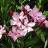

Plant Grimoire

OleanderNotes/Warnings
Scientific Name
Safety & Uses
Gender
Also called
Rose Bay, Rose Laurel, Adelfa, Nerium, Laurier-Rose
Correspondences1
Materials1
Oleander (Nerium oleander; Cascabela thevetia) is a dangerously poisonous plant with occasional use in love magick despite heavy taboos.
Magickal Properties
Gender: Feminine
Planet: Saturn
Element: Earth
Powers: Love
Magickal Uses
- Cautionary love work: Although Italian magickal thought warns that keeping any part of oleander in the house brings sickness, disgrace, and misfortune, oleander is sometimes used in love spells - strictly external and symbolic.
Safety: Poison. Never ingest. Handle with extreme care and avoid internal or topical use.
Meaning When Gifted
When oleander is gifted it carries the meaning of caution.